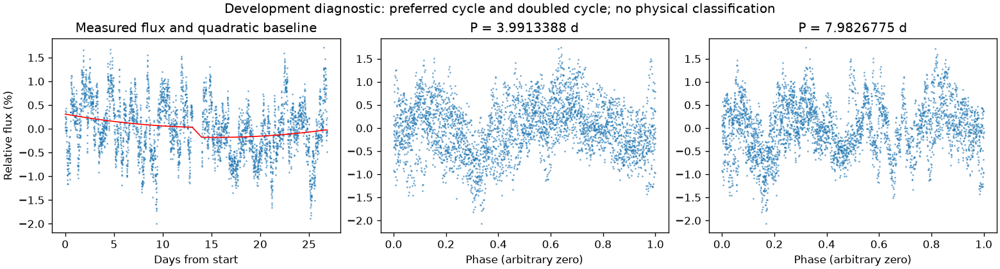
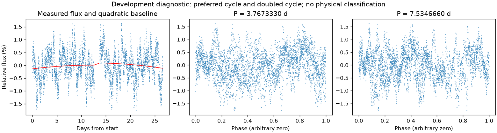

并非所有时段都支持重复变化
第二版周期：None 天；状态：not_established。

左图红线是缓慢基线；右面两图去除该基线。若未通过周期要求，两图只展示得分最高的竞争解释。
| 竞争周期（天） | 交替周期预测改善 | 两组各自改善 | 通过初筛 |
|---|---|---|---|
| 3.9913388 | -7.0% | -4.4% / -10.9% | 否 |
| 2.8425248 | -9.5% | -3.2% / -16.5% | 否 |
| 7.9838956 | -13.9% | -35.6% / 12.0% | 否 |
| 1.9691262 | -13.9% | -7.3% / -23.5% | 否 |
| 2.0052212 | -22.2% | -20.1% / -24.9% | 否 |
| 5.8970632 | -23.9% | -27.9% / -18.7% | 否 |
| 1.4103778 | -26.3% | -28.2% / -24.1% | 否 |
| 2.0433773 | -27.3% | -20.3% / -37.3% | 否 |
“预测改善”衡量用一组周期的形状预测另一组，比只有缓慢基线好多少；负数表示更差。搜索和预测共用了资料，因此这不是可信概率，也不是独立验证。
第二版周期：None 天；状态：not_established。

左图红线是缓慢基线；右面两图去除该基线。若未通过周期要求，两图只展示得分最高的竞争解释。
| 竞争周期（天） | 交替周期预测改善 | 两组各自改善 | 通过初筛 |
|---|---|---|---|
| 3.7673330 | 7.8% | 5.7% / 11.5% | 否 |
| 1.2590099 | 3.8% | 5.8% / 0.8% | 否 |
| 5.0344719 | -1.4% | 0.4% / -3.5% | 否 |
| 0.6316056 | -13.4% | -14.5% / -12.3% | 否 |
| 1.0661311 | -15.1% | -12.6% / -17.8% | 否 |
| 2.1318062 | -16.1% | -7.5% / -26.5% | 否 |
| 1.7986968 | -20.6% | -15.7% / -28.0% | 否 |
| 4.2623970 | -26.6% | -23.2% / -30.9% | 否 |
“预测改善”衡量用一组周期的形状预测另一组，比只有缓慢基线好多少；负数表示更差。搜索和预测共用了资料，因此这不是可信概率，也不是独立验证。